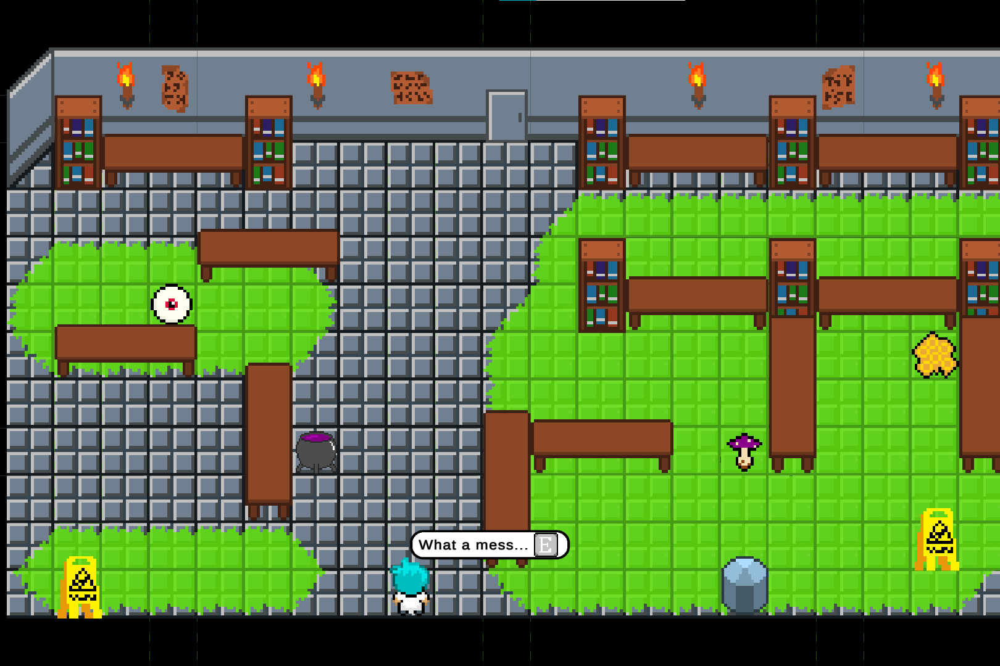

Projects
Below is a select list of college and internship programming projects I've worked on in the past. For a more comprehensive list of my projects, check out my Publications and GitHub.
Identifying and Simplifying Non-consumer Terminology in Biomedical Abstracts
June 2023 - PresentThe culmination of my two summer research internships at the National Library of Medicine (2023-2024). For this project, I annotated a text simplification dataset of over 1,200 sentence pairs, and developed a suite of language models for identifying non-consumer biomedical terms in research abstracts as well as generating explanations for those terms. These models were fine-tuned from pre-trained versions of BERT and Llama-3.
I presented this work for National Institutes of Health Summer Intern Program Poster Day in both 2023 and 2024. Additionally, I presented the dataset for this project for the PLABA track at TREC 2024.
Statistical Token Classifier for Identifying Medical Terms
March - April 2024My final project from when I took CS 136 (Statistical Pattern Recognition) at Tufts in the spring of 2024. I developed a Categorical-Dirichlet statistical language model to identify complex biomedical terms in academic texts. This project was inspired by the work I did at the National Library of Medicine during the summer of 2023.
Alchemist's Dungeon
February 2022A 2D video game I made for my midterm project from when I took CS 23 (Game Design) at Tufts in the spring of 2022. I worked on this project with three other classmates. Alchemist's Dungeon is a single-player puzzle game, where the player must navigate levels with slippery floors to collect potion ingredients.
